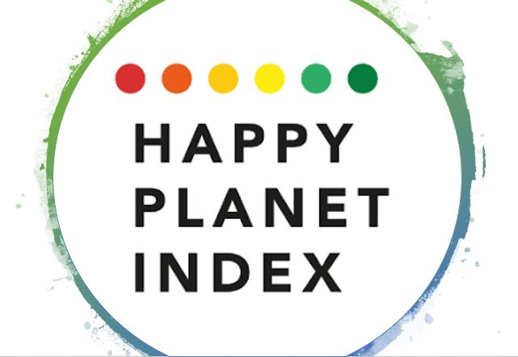
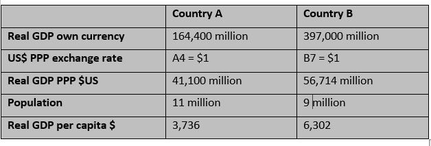
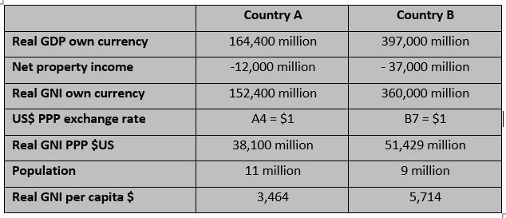
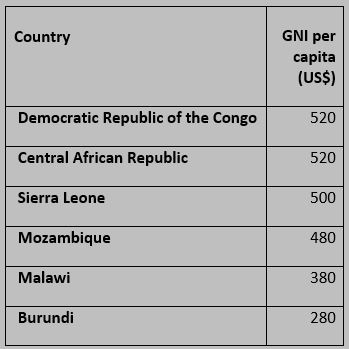
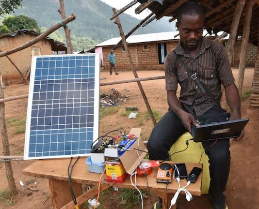
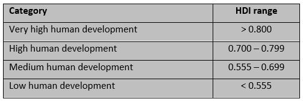
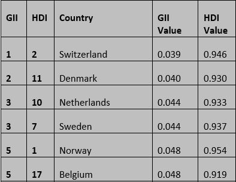
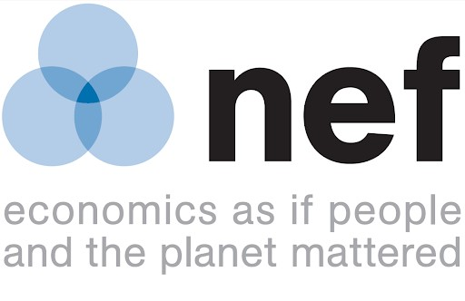
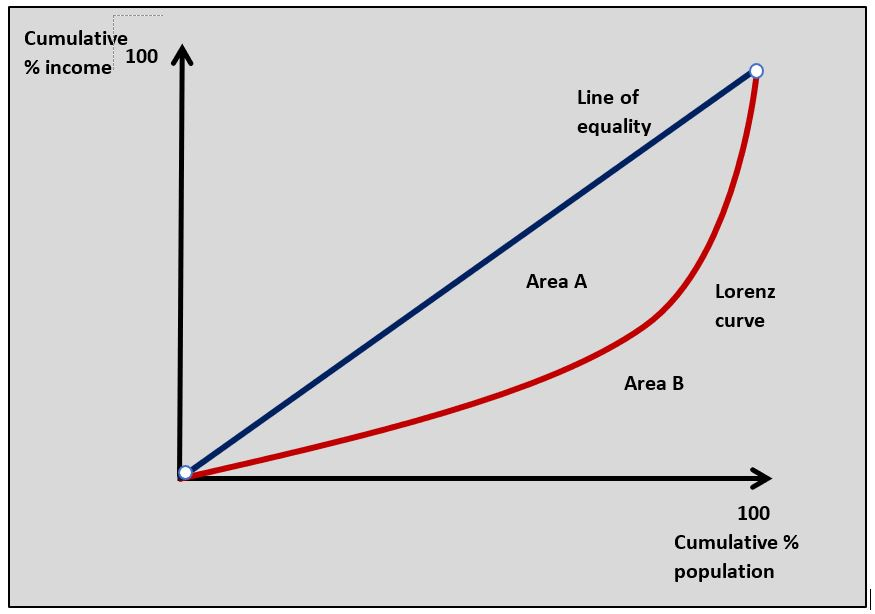

IB Docs (2) Team
IB Docs (2) Team

Unit 4.8 Measuring development
The definition of economic development as multidimensional means measuring economic development to take into account a number of different criteria. The principle that economic development is judged according to welfare is problematic in terms of measurement. The concepts of welfare or quality of life or living standards are difficult to measure objectively and often require valued judgements.
What you should know by the end of this chapter:

- The multidimensional nature of economic development
- Single economic development indicators such as GDP/GNI per person (per capita)
- Composite indicators such as the Human Development Index (HDI), Gender Inequality Index (GII), Inequality-adjusted Human Development Index (IHDI), Happy Planet Index
- Strengths and limitations of different approaches to measuring economic development
Revision material
 The link to the attached pdf is revision material from Unit 4.8 Measuring development. The revision material can be downloaded as a student handout.
The link to the attached pdf is revision material from Unit 4.8 Measuring development. The revision material can be downloaded as a student handout.
Multidimensional nature of economic development
In Unit 4.7 we defined economic development as the sustained rise in the welfare of a country’s population over time. We also broadened this definition to consider the nature of a rise in welfare in terms of rising real incomes, falling rates of poverty, better education and healthcare, and greater equity.
The definition of economic development as multidimensional means measuring economic development to take into account a number of different criteria. The principle that economic development is judged according to welfare is problematic in terms of measurement. The concepts of welfare or quality of life or living standards are difficult to measure objectively and often require valued judgements. For example, if you take two similar countries like Norway and Sweden it would be difficult to say one was more developed than the other even if data suggested one of them was more developed.
Single indicators of economic development
Real GDP per capita PPP*
*This section is covered in detail in Unit 3.1 Measuring economic activity
The gross domestic product is the money value of all final goods and services produced by a country in one year. Real GDP means the GDP figure for a country is adjusted for inflation. Real GDP divided by the country’s population gives the Real GDP per capita of a country.
real GDP/population = real GDP per capita

For international comparisons, the real GDP per capita figure is converted into US$ using a purchase power parity exchange rate, PPP.
The PPP is a long-term exchange rate calculated by considering the ratio of prices in one country compared to another.
The table illustrates the calculation of real GDP per capita for Country A and Country B
Real GNI per capita
The gross national income is the total income generated by a country and is calculated by adding net income from property owned abroad to the real GDP.

real GDP + net property income = real GNIreal GNI / population = real GNI per capita
The real GNI per capita is shown in the table. Based on the real GDP/GNI per capita for Country A and Country B we might conclude that Country B’s higher value on both measures means it is more economically developed.
Real GNI per capita is sometimes seen as a better measure of economic development because it uses the total income of a country, whereas real GDP per capita measures the value of what a country produces. Economically less developed countries (ELDCs) often have a higher real GDP per capita because of the inward foreign direct investment they receive which leads to an outflow of profits and interest payments making the value of their net property income negative. This is true for Country A and Country B in this example.
So what’s it like to live in one of the world's poorest countries, Burundi? At $3.012 billion its GDP is less than the wealth of a number of the richest people in the world! Here is a review by one recent visitor: 'Burundi is a wonderful place to live. It is a country with an economy based on agriculture. Its main export is coffee which accounts for 93% of its exports. Life in Bujumbura, the country’s largest city and main port is a chance to meet beautiful people on the beaches of Lake Tanganyika.

It is a safe place for foreigners who are treated so well by the local population. The cost of living is very cheap with a meal in a good restaurant costing about $2 and a decent hotel room for $20. It is, however, a place with some political conflict and this has led to unrest that you need to be wary of.’The table shows six of the poorest countries in the world based on real GNI per capita in 2019.
 Worksheet questions
Worksheet questions
Questions
a. Define the term gross national income (GNI). [2]
GNI is the money value of the total output of an economy measured in one year plus net property income from abroad.
b. Outline how the real GNI per capita of Burundi would have been calculated. [4]
Real GNI per capita is calculated by:
- nominal GDP / GDP deflator = real GDP
- real GDP + net property income = real GNI
- real GNI / population = real GNI per capita
c. Using a circular flow of income diagram, explain what Burundi's real GDP of $3.012 billion means for household incomes in the country. [4]
 Burundi's real GDP per capita of $3.012 billion is the value of funds in Burundi's circular flow of income. This money value of the country's GDP will flow to its households as income. When it is divided by the population it represents a low income per household.
Burundi's real GDP per capita of $3.012 billion is the value of funds in Burundi's circular flow of income. This money value of the country's GDP will flow to its households as income. When it is divided by the population it represents a low income per household.
Investigation
Investigate what it is like to live in one of the other low-income countries in the table.
Evaluation of real GDP per capita and real GNI capita per
Strengths
- Real GDP/GNI per capita is a simple objective measure of welfare because it provides a single value that can be used to judge a country’s development. Country B in this case has a higher real GDP/GNI per capita than Country A so on this indicator Country B is more economically developed.
- There is a correlation between rising real GDP/GNI per capita and economic development. A country with a higher real GDP/GNI per capita is likely to have higher household incomes, lower poverty rates and greater tax revenues to improve education and health.
- Real GDP/GNI per capita is widely recognised and accepted as a measure of development.
Weaknesses
- Real GDP/GNI per capita is narrow and fails to take into account many other variables that affect welfare and development such as healthcare and education.
- Real GDP/GNI per capita is an average and makes no allowance for income disparities amongst the population.
- There is no allowance in real GDP/GNI per capita for sustainability. A relatively high real GDP/GNI per capita might come at the expense of significant environmental costs.
Other single development indicators of economic development
- A health indicator often used is life expectancy at birth. This is the average number of years individuals in a country might expect to live for. The longer the average life expectancy of people in a country the more developed a country would be on this indicator.
- There are two main education indicators. One would be expected years in schooling, which is the average years of schooling a child would expect to receive from the time they enter school. It is also possible to use the mean years of schooling, which is the average time people over the age of 25 spent in school. In both cases the more time the average person spends in school in a country the greater the level of development.
- The Gini coefficient can be used as an income inequality indicator. This is covered in detail in chapter 3.4 on inequality and poverty. The closer a country’s Gini coefficient is to one the more unequal income distribution is in the country and this would indicate lower economic development. Unit 3.4(1) Economics of inequality and poverty

- Access to electricity can be used as an energy single indicator of development. A greater number of households being able to access electricity to light their homes and use electronics products shows economic development.
- Environmental indicators are an important measure of sustainable development. For example, economists can put a value on the loss of biodiversity and access to clean water.
Evaluation of single development indicators
Strengths
Single development indicators can be a useful statistical tool to guide policymaking in a particular area to improve economic development. For example, a government might look at the education indicator as a guide to improving the country’s schools.
Weaknesses
A single development indicator is by definition a narrow measure of development and it does not reflect the multidimensional nature of economic development.
Composite indicators of economic development
The multidimensional nature of economic development means it can be more effectively measured by using a composite indicator. Composite indicators combine a number of criteria expressed as an index number to measure economic development.
Human development index (HDI)
The Human Development Index measures a country's achievements in three basic aspects of human development: a long and healthy life, wide access to education and a decent material standard of living.
The HDI index is constructed by using the following measurable criteria:
- Life Expectancy in years (health indicator)
- Mean years of schooling and expected years of schooling (education indicator)
- Real GNI per capita PPP (material standard of living indicator)
The three criteria are combined to give a numerical value between 0-1, the closer the value is to 1 the more advanced economic development is in the country.

Countries can be categorised into four levels which are set out in the table.
Evaluation of HDI
Strengths
- HDI does provide a quantifiable value on which to make a judgement about economic development.
- It covers more factors that affect economic development than real GDP/GNI per capita.
- HDI is a widely established and accepted measure of economic development.
Weaknesses
- HDI does not include certain criteria which are key aspects of development such as income inequalities, gender inequalities, political participation and poverty levels, etc.
- Measuring the relative importance of the different aspects of the index is difficult. For example, it is very difficult to judge the relative importance life expectancy has in the HDI.
- Accurately measuring individual parts of the index is problematic. In many ELDCs accurately measuring GDP, average years in education and life expectancy are all very difficult.
Other composite indicators
Gender Inequality Index (GII)
The GII was introduced by the UNDP to measure gender inequality as an indicator of economic development. The GII works on a similar principle to the HDI by using three criteria to measure gender inequality. The criteria are:
- Reproductive health - measured by maternal mortality ratio and adolescent birth rates.
- Empowerment - measured by the proportion of parliamentary seats occupied by females and the proportion of women with at least some secondary education.
- Economic status - expressed as labour market participation and measured by the labour force participation rate of women aged 15 years and older.

The GII aims to show the differences in the distribution of achievements between women and men in a country. It also measures the human development costs of gender inequality. The higher the GII value of a country the greater the disparities between men and women in the population. A low GII value is an indicator of more advanced economic development in a country. The table illustrates the GII values in 2019 for the five leading countries in the world on this metric.
Switzerland is currently the world’s leading country in the Gender Inequality Index. It heads a list of 164 countries where women are treated most equitably according to the criteria in the index. Yemen is at the bottom of the list. Beyond the GII variables of reproductive health, empowerment and economic status, Switzerland also scores well in terms of discrimination in the family, the level of domestic violence and reproductive rights.
However, it is worth remembering that Switzerland is a country where women did not get the right to vote until 1971 and in some regions of the country they did not get the right to vote until 1991.
Worksheet questions
Questions
a. Outline how Switzerland's GII would have been measured. [4]
- Reproductive health - measured by maternal mortality ratio and adolescent birth rates.
- Empowerment - measured by the proportion of parliamentary seats occupied by females and the proportion of women with at least some secondary education.
- Economic status - expressed as labour market participation and measured by the labour force participation rate of women aged 15 years and older.
b. Using a real-world example, evaluate the view that HDI is an effective way of measuring a country's economic development. [15]
Answers should include:
- Definition of economic development and HDI.
- A diagram to show the circular flow of income of a country to show what GDP/GNI would mean for household incomes as an element of economic development.
- An explanation that GNI per capita is a way of measuring the material welfare of the population in terms of access to goods and services.
- An explanation that life expectancy can be used to measure the health of the population as a measure of development.
- An explanation that mean and expected years in school are a way of measuring the education level of a country and its impact on economic development
- An explanation that the higher the individual indicators in the HDI the closer the HDI value is to 1 and the more developed a country is.
- An example of a high HDI value could be Switzerland and it can be used to illustrate the development of this country in terms of the three indicators in the HDI
- Evaluation might include discussion of the relatively narrow range of the indicators in the HDI (there is no mention of political stability, family life, environmental issues etc). The indicators themselves can be difficult to measure (consider the problems of getting an accurate figure for GNI or years in schooling). One key weakness of HDI is that it is an average and there is no allowance for income or gender inequality. Answers could consider an alternative measure of development such as the Happy Planet Index or the World Happiness Report.
Investigation
Research the GII of another country in the table and examine whether it is a country with gender equality.
Inequality-adjusted Human Development Index (IHDI)
The IHDI is produced by the United Nations Development Programme using the same approach to measuring economic development as the HDI, but it makes an allowance for inequality to produce the index. The three criteria used to calculate the HDI value, health, education and income all have a coefficient of inequality used to produce the final IHDI value. By building inequality into the index it makes an allowance for the costs of inequality in a country. Countries with wide inequality will have a lower value in the IHDI index compared to those with a more even income distribution. This means two countries can have the same HDI value, but they could have different IHDI values.
Happy Planet Index

The Happy Planet Index has been covered in Uni 3.1 of this book. This index is important for measuring sustainable economic development because it measures a nation's sustainable well-being. It is produced by the New Economics Foundation (NEF) and gives environmental factors a high weighting in constructing the index.Unit 3.1(2): Measuring Economic Development
Evaluation of other composite indicators
Strengths
- The greater the range of criteria used to construct an index to measure economic development the more accurately the index reflects the multidimensional nature of development. The GII, IHDI and Happy Planet index all build in an allowance for real factors that affect the welfare of a country’s population whether its gender inequality in the GII or environmental factors in the Happy Planet Index.
- Composite measures can be used by policymakers to improve different aspects of development by giving governments more specific information on aspects of development such as inequality and sustainability.
Weaknesses
- The more criteria there are in a composite index the less objective its final value is because weightings have to be given to each criteria used to produce the final index value. For example, establishing a value to compare reproductive health and empowerment when producing the GII is very difficult.
- It is very difficult to quantify some of the factors that are used to produce a composite index. Empowerment of women can be measured using different variables such as political representation, but there are many other factors that affect the empowerment of women as well.
- The number of composite indexes available makes it difficult to know which to most accurately measure economic development. Would you choose the Happy Planet Index over the HDI?
Relationship between economic growth and economic development
The relationship between economic growth and economic development is a question constantly posed in development economics. In Unit 3.3(1) in this book, we look in detail at the costs and benefits of economic growth for a country and we can relate these to economic development.
Unit 3.3(1) Macroeconomic objectives: economic growth
Benefits of growth for development
- As real GDP rises household incomes rise and this gives people greater access to goods and services to improve their material living standards.
- Economic growth can increase the income of the poorest in society and take people out of absolute poverty.
- Rising real GDP increases business activity and can reduce unemployment.
- As the economy grows, household incomes and business profits rise leading to a rise in government tax revenues which can be used to fund improvements in a country's healthcare, education and infrastructure.
Costs of growth for development
- Increasing economic activity has a negative effect on the environment and sustainability. This can be in the form of global costs such as climate change or localised pollution.
- The increased use of finite resources such as forests, water and soil has a negative impact on sustainability.
- As economies grow there is a strong correlation between rising incomes and rising income inequality.
The debate between economic growth and economic development is constantly argued among economists, the media and politicians.
For the fourth year in a row Detroit, Michigan is the most dangerous place to live in the United States. With a population of just over 700,000 people, it has a violent crime rate of 2,137 incidents per 100,000 population.
With so much gang-related violence, murder, rape, robbery and assault it is a very dangerous place. It is also poor, with an average household income of $26,000 well below the national average. It has a large number of residents with no healthcare coverage and access to only low-achieving schools.
Detroit is in one of the richest countries in the world. This statistic highlights one of the problems of measuring economic development. It struggles to account for areas of localised poor welfare even with the IHDI index. It also has problems covering issues like the costs of crime and the feelings of insecurity that go with a high crime rate.
Worksheet questions
Questions
a. Explain how IHDI can be used to measure economic development. [10]
Answers might include:

- Definitions of IHDI and economic development.
- A Lorenz curve diagram to show income inequality in a country such as the US.
- An explanation of how the three criteria used to calculate the HDI value: life expectancy (health), expected and average years in schooling (education) and real GNI per capita (income) all have a coefficient of inequality used to produce the final IHDI value.
- An example could include the United States which has an IHDI value of 0.808 which puts it 28th in the world.
b. Using a real-world example, evaluate the effectiveness of real GNI per capita to measure economic development. [15]
Answers might include:
- Definition of real GNI per capita and economic development.
- A circular flow of income diagram to illustrate how GDP/GNI is measured.
- An explanation of how real GNI per capita is used to measure economic development by relating it to household incomes and access to goods and services; the quality of health, education and other public services; and the quality of a country's infrastructure.
- An explanation of the strengths of using real GNI per capita to measure development in terms of universal acceptance and objectivity.
- An example of the use of real GNI capita to measure economic development such as the US.
- Evaluation might include discussion of the weaknesses of using real GNI per capita to measure economic development such as distribution of income, parallel markets, non-monetary factors, the nature of a country's output and currency conversion. The answer could go on to discuss other methods of measuring economic development such as HDI, IHDI, Happy Planet Index and the World Happiness Report.
Investigation
Research another city in the world with similar economic development issues to Detroit.
Economic development is very often viewed from a national perspective. Development economists can pose the question: how has the quality of life of a country's citizens improved over time? The data used to measure economic development in a country is based on aggregates and averages: real GNI per capita, HDI, World Happiness report, etc. The problem with totals and averages is they struggle to represent the welfare of 'individuals' within a society. This is where an understanding of equity and equality is important in measuring economic development. The GII and Gini coefficient make some allowance for equity in terms of gender and income but what about age, race and religious inequality?
Is there any evidence of age inequality in the country you live in? Do your parents enjoy more economic opportunities than you do?
Using the data, which of the following is true about Country X and Country Y?
| Country X | Country Y | |
| Real GNI | ||
| Population | 15m | 40m |
Which of the following is not a single indicator of economic development?
HDI includes GNI per capita, average and expected years in schooling and life expectancy.
Which of the following is not true about the Human Development Index?
Average and expected years in schooling is used to measure education.
Which of the following is least likely to be included in the GII?
The Gender Inequality Index (GII) does not include life expectancy but does include all the other indicators.
Which of the following does the IHDI measure?
 Twitter
Twitter
 Facebook
Facebook
 LinkedIn
LinkedIn